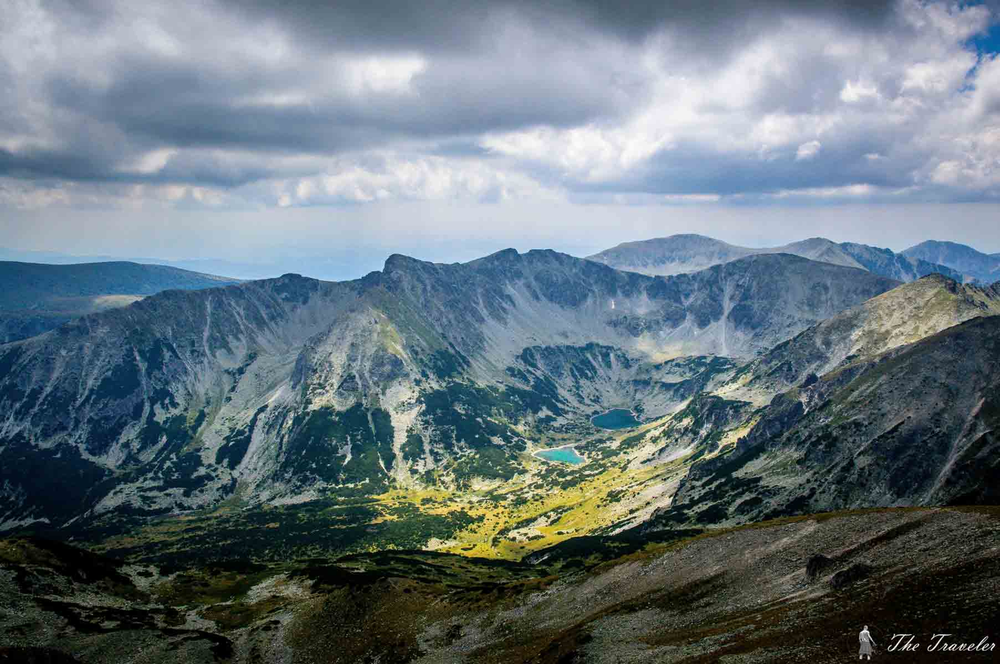
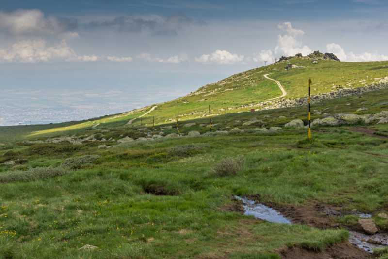
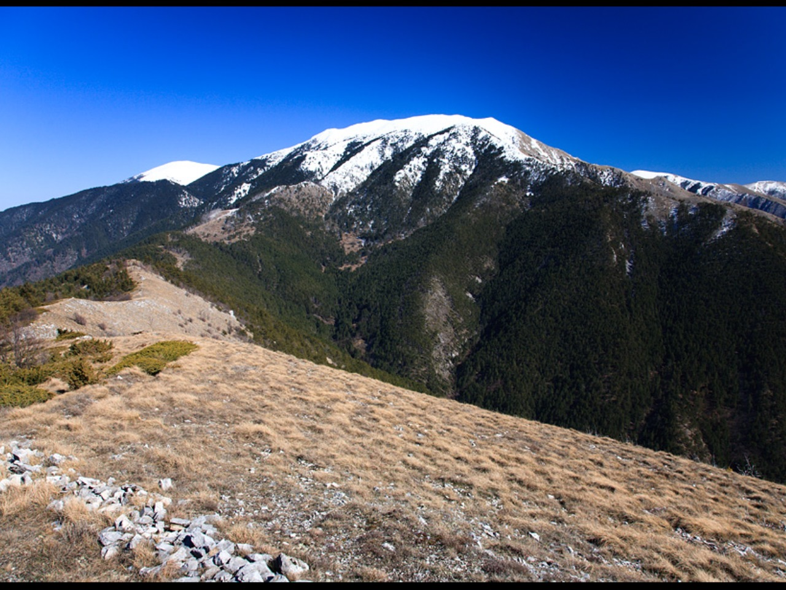
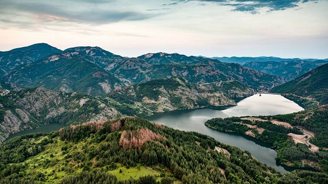

-

Рила е най-високата планина в България и на целия Балкански полуостров. В европейската „Класация” заема престижното шесто място. Има цели 173 върха с височина над 2000 м и множество красиви ледникови езера.
-

Пирин има приказно красив алпийски облик с блестящи мраморни върхове, остри скалисти ридове и над 140 ледникови езера. В снагата му се приютяват три биосферни резервата и множество защитени местности.
-

Това е най-голямата по площ и най-дългата българска планина. „Снагата” й разделя България на Южна и Северна и се простира от Сърбия до Черно море. Предбалканът също е част от нея.
-

Витоша е най-посещаваната българска планина. Издига се непосредствено над София и е един от символите на нашата столица.
-

Планината дели територията си между нашата страна и Македония. Освонен изходен пункт към нея е град Кюстендил, откъдето по асфалтов път се стига до хижа „Осогово”. От хижата до връх Руне се стига пеша за четири часа.
-

Славянка е характерна с карстовия си характер и разнообразен растителен свят. Наричана е „Китна планина”, защото почти през цялата година е като цветна градина. Намира се на юг от Пирин на границата ни с Гърция.
-

Простира се на обширна територия и заемат голяма част от Централна Южна България. Разделя се условно на Западни и Източни Родопи. В Родопите се намират едни от най-красивите и живописни места у нас.